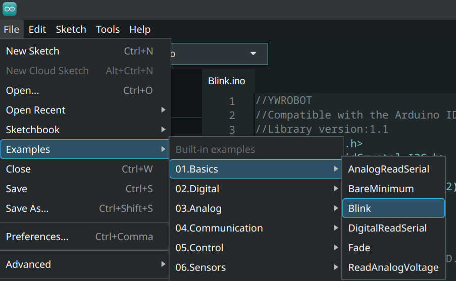

Arduino (2)#
În laboratorul de astăzi, vom continua să ne jucăm cu plăcuțele Arduino, încercând să realizăm, printre altele, o comunicare între plăcuțe diferite, un VU meter și sunet la ieșire!
Laborator: Electronică Digitală (2023-2024 - lab3)
Laborator original: Victor Stoica[1]
0. Pregătirea instrumentelor#
Pentru a ne asigura că platforma Arduino funcționează conform așteptărilor, vom încărca pe plăcuțele noastre exemplul Blink ce se găsește direct în Arduino IDE.
-
Porniți calculatoarele (pe Linux!)
-
Deschideți Arduino IDE și încărcați codul din exemplul Blink (File » Examples » 01. Basics » Blink)
Încărcarea programului de test (Blink)
-
Dați upload și verificați dacă plăcuța are un LED care se pornește și se oprește la un interval de o secundă.
Depanare#
În situația în care nu a funcționat codul anterior, puteți încerca următoarele:
-
Dacă nu ați verificat deja, asigurați-vă că plăcuța este alimentată (ar trebui să existe un LED care stă aprins neîntrerupt)
-
Asigurați-vă că portul COM este cel la care a fost conectată plăcuța Arduino (Tools » Port: "..."), respectiv că platforma este configurată ca să compileze codul pentru Arduino (Tools » Board: "...")
-
Dacă vedeți că nu apar erori de Output, încercați să schimbați cablul cu cel al colegilor cărora le merge - este foarte posibil să apară o problemă de transmisie, greu de detectat altfel.
1. Transmisia datelor prin infraroșu#
Dacă ați folosit la un moment dat o telecomandă (fie ea de televizor, de aer condiționat sau chiar de garaj), este foarte posibil să fi interacționat deja cu transmisia datelor prin infraroșu (prescurtat IR).
În general, lumina IR a telecomenzii TV este pornită și oprită la o frecvență de obicei constantă (spre exemplu, în cazul standardului RC-5, discutăm de 36kHz).
Avantajele principale ale tehnologiei sunt costul (sunt ieftine de produs) și faptul că nu sunt detectabile de ochiul uman.
Din nefericire însă, dezavantajul semnificativ este că lumina IR trebuie îndreptată direct către receptor pentru ca acesta să capteze informațiile transmise.
Așadar, dacă nu există un drum drept prin care să se propage semnalul între transmițător și receptor, nu ar trebui folosită transmisia IR!
Pregătirea bibliotecii#
Pentru acest exercițiu, veți lucra împreună cu colegii de la postul de lucru alăturat! Va trebui să vă decideți care dintre voi va pregăti receptorul și care emițătorul.
Atât echipa ce se ocupă de receptor, cât și cea care se ocupă de emițător, vor descărca biblioteca Arduino-IRremote (de la cel mai recent Release: Assets » Source code (zip)) și o vor instala (din Arduino IDE: Sketch » Include Library » Add .ZIP Library...):
Încărcare bibliotecă .ZIP
Dacă biblioteca s-a instalat cu succes, o să primiți un mesaj, în partea de jos a aplicației, asemănător cu acesta: "Library added to your libraries. Check 'Include library' menu".
Va trebui să realizați, în funcție de rolul echipei voastre, unul singur dintre cele două scheme de mai jos.
Receptor#
Doar echipa care se ocupă de receptor va realiza următorul montaj:
Schema logică a receptorului IR
Receptorul vostru are următorul pinout:
Pinout receiver[1]
Încărcați apoi exemplul ReceiveDemo (File » Examples » Add .ZIP IRremote » ReceiveDemo) și așteptați ca echipa care se ocupă cu transmițătorul să termine de realizat montajul lor.
Transmițător#
Doar echipa care se ocupă de transmițător va realiza următorul montaj:
Schema logică a receptorului IR
Încărcați apoi exemplul ReceiveDemo (File » Examples » Add .ZIP IRremote » SendDemo) și așteptați ca echipa care se ocupă cu receptorul să termine de realizat montajul lor.
Monitorul serial#
Ambele echipe pot deschide acum monitorul serial pentru a verifica dacă transmisia funcționează sau nu.
Pentru a face asta, apăsați pe pictograma din colțul dreapta-sus al Arduino IDE, apoi asigurați-vă că aveți setat baud rate-ul la 115200:
Exemplu de așa nu! - setați corect baud rate-ul!
Depanare#
Dacă transmisia / recepția nu se realizează cu succes:
-
Verificați ca baud rate-ul să fie setat corect (115200);
-
Urmăriți osciloscopul atât la transmisie, cât și la recepție. Asigurați-vă că triggerul este setat pe modul rising edge.
-
Doar dacă nu aveți iPhone, puteți încerca să verificați semnalul luminos produs de LED folosind camera telefonului. Pe iPhone nu funcționează, întrucât este
un sistem inferior Androiduluimontat un filtru IR pe camera dispozitivului.
2. Generator de tonuri#
Dacă programați microcontrollerul să genereze semnale dreptunghiulare cu frecvență variabilă și conectați un buzer pasiv la pinul care generează aceste semnale, puteți obține note muzicale controlând pauza dintre două trenuri de impulsuri.
Montaj#
Pentru început, realizați următorul montaj simplu pe plăcuțele voastre:
Montaj buzzer
În cadrul laboratorului, veți folosi un buzzer cu pinoutul:
Pinout buzzer
Melodii#
Pentru a vă alege melodiile ce să fie cântate de plăcuța voastră, intrați pe repo-ul arduino-songs și alegeți de acolo. Încărcați apoi codul pe plăcuță.
Depanare#
În principiu, puteți următorii pași pentru a repara eventualele probleme:
-
Asigurați-vă că ați respectat pinoutul buzzerului;
-
Verificați că, în cod, folosiți pinul potrivit pentru output (conform circuitului, pinul D11)
3. Simularea funcțiilor logice#
Ați învățat deja la PL funcțiile logice utilizate în general de ingineri: NOT, AND, OR și XOR. Le vom simula și noi folosind plăcuța Arduino!
Montaj#
Realizați următorul montaj pe plăcuțele voastre:
Montaj funcții logice
Cod#
De data aceasta, va trebui să implementați voi următoarele funcțiile logice:
-
NOT - la apăsarea butonului 1 (pinul D2), LED-ul va fi stins, iar dacă butonul nu este apăsat, LED-ul va fi aprins;
-
AND - LED-ul va fi aprins doar atunci când sunt apăsate ambele butoane;
-
OR - LED-ul va fi aprins atunci când se apasă oricare dintre butoane (chiar și ambele);
-
XOR - LED-ul va fi aprins numai în cazul în care se apasă un singur buton (dar nu amândouă!).
4. Debounce#
Atunci când se dorește utilizarea semnalului generat de apăsarea unui buton, trebuie să țineți cont de fenomenul de bouncing, despre care am discutat în laboratoarele precedente.
Pentru a-l combate, vom discuta două strategii.
Debounce software#
Pentru a rezolva problema de debounce din software, putem să verificăm dacă a trecut o perioadă de timp prestabilită (de ordinul milisecundelor, de obicei 50ms) de la ultima tranziție generată de buton și că starea butonului este cea dorită (1 sau 0 logic).
Dacă toate aceste condiții se respectă, se poate considera că butonul a fost apăsat o singură dată.
Puteți încărca codul de mai jos (pe care cu siguranță nu îl veți înțelege complet decât după ce parcurgeți materia de PM din anul 3) și să verificați funcționalitatea corectă a butonului.
Acesta se folosește de registre, timere și întreruperi care stau ascunse în spatele tuturor funcțiilor Arduino de nivel înalt. În cazul nostru, acestea au fost utilizate pentru a optimiza codul. Puteți deschide monitorul serial, setat la baud rate-ul 115200 și să vedeți ce se întâmplă când apăsați butonul.
#include <avr/io.h>
#include <util/delay.h>
#include <stdio.h>
#include <avr/interrupt.h>
#include <stdbool.h>
#define FOSC 16000000UL
#define USART_BAUDRATE 115200
#define BAUD_PRESCALE (FOSC / (USART_BAUDRATE * 8UL) - 1)
uint16_t d = 3000;
char write_buffer[80];
volatile uint64_t ms_counter = 0;
volatile uint64_t previous_ms_counter = 0;
volatile uint16_t print_ms_counter = 0;
volatile uint8_t button1_press_detect = false;
volatile uint8_t button1_debounce_ms_counter = 0;
volatile uint8_t button1_state = 0;
int btn_counter1 = 0;
int button1_laststate = 1;
void USART0_init(unsigned int UBRR0_value) {
UBRR0 = UBRR0_value; // setează baud rate. UBRR0 - registru pe 16 biți
UCSR0B = (1<<TXEN0); // pornește transmițătorul
// setează formatul frame-ului: 8 biți de date, 1 biți de stop, fără paritate
UCSR0C |= (3<<UCSZ00);
UCSR0C &= ~(1<<USBS0);
UCSR0A |= (1<<U2X0); // activeaza modul viteza dubla
}
void USART0_transmit (const char *data) {
while ( *data != '\0') {
while(!(UCSR0A & (1<<UDRE0))); //așteaptă până când buffer-ul e gol
UDR0 = *data++; // pune datele în buffer; transmisia va porni automat în urma scrierii
}
}
void init_timer2()
{
// timer2 prescaler = 249 / (12.000.000 / 64) = 997.3 Hz
cli(); // set global interrupt disable
OCR2A = 249; // set top value
TCNT2 = 0; // clear counter register
TCCR2A |= (1 << WGM21); // CTC mode 2.from from datasheet
TCCR2A &= ~(1 << WGM20); // CTC mode 2.from from datasheet
TCCR2B &= ~(1 << WGM22); // CTC mode 2.from from datasheet
TIMSK2 |= (1 << OCIE2A); // enable output compare A match interrupt
TCCR2B |= (1 << CS22); // start timer, 64 From prescaler
sei(); // set global interrupt enable
}
void interrupt_config(){
cli();
EIMSK |= (1 << INT0); // activeaza intreruperea INT2 (pinul PB2)
EICRA |= (1 << ISC00); // configureaza INT2 sa fie generata la schimbarea starii
sei();
}
ISR (TIMER2_COMPA_vect){
ms_counter++; // incrementare contor milisecunde
if (print_ms_counter)
print_ms_counter--; // contor milisecunde pentru delay la afisare
if (button1_debounce_ms_counter)
button1_debounce_ms_counter--; // contor milisecunde pentru debounce button1
}
ISR (INT0_vect){ // s-a produs intreruperea aka s-a apasat butonul
button1_state = ((PIND & (1 << PD2)) >> PD2); //se memoreaza starea butonului
button1_debounce_ms_counter = 50; //se initializaeaza contorul
button1_press_detect = true; //se seteaza un flag
sprintf(write_buffer, "B: %d\r\n", button1_state); // mesaj de test
USART0_transmit (write_buffer);
}
void init_gpio()
{
DDRD &= ~(_BV(PD2));
PORTD = _BV (PORTD2);
DDRB |= (1 << PB5);
PINB |= (1 << PB5);
}
int main() {
init_gpio(); // initializare GPIO
USART0_init(BAUD_PRESCALE); // initializare USART
interrupt_config(); // initializare intreruperi
init_timer2(); // initializare timer2
sprintf(write_buffer, "Hello World\r\n"); // mesaj de test
USART0_transmit (write_buffer);
while (1){
if (ms_counter >= previous_ms_counter + d){
previous_ms_counter = ms_counter;
sprintf(write_buffer, "ms_counter: %lu\r\n", previous_ms_counter);
USART0_transmit (write_buffer);
}
/* daca butonul a fost apasat, si a trecut timpul de debounce, si
GPIO-ul se gaseste in 1 logic, atunci apasarea este "valida" */
if ((button1_press_detect) && (button1_debounce_ms_counter <= 0)){
if ((button1_state != button1_laststate)){
button1_laststate = button1_state;
if(!(button1_state)){
btn_counter1 ++; //se initializaeaza contorul
button1_press_detect = false;
PINB |= (1 << PIND5); // face toggle la LED
}
}
}
}
}Debounce hardware#
Mult mai accesibil vouă ar fi debounce-ul hardware, pe care l-am realizat deja sub o oarecare formă încă din primul laborator de Arduino.
Acesta presupunea utilizarea unui condensator între piciorușele butonului, formându-se astfel... un filtru RC!
5. VU meter#
Un VU meter (volume unit meter) reprezintă o modalitate simplă de a transpune valorile citite de un senzor (fie el analogic sau digital) într-o formă ușor de interpretat vizual.
Vom încerca să creăm și noi un astfel de circuit, luând-o pas cu pas.
Baza circuitului#
Realizați următorul circuit folosind LED-urile pe care le găsiți în chit (nu este necesară respectarea unui cod de culori):
Circuit care stă la baza VU meterului
Rulați apoi următorul cod:
const int sensorMin = 1;
const int sensorMax = 8;
String inputString = "";
bool stringComplete = false;
int sensorReading = 0;
void serialEvent() {
while (Serial.available()) {
char inChar = (char)Serial.read();
inputString += inChar;
if (inChar == '\n') {
stringComplete = true;
}
}
}
void setup() {
Serial.begin(9600);
DDRB |= 3;
DDRD |= (0X3F << 2);
inputString.reserve(20);
Serial.println("Enter a value between 0 and 8");
}
void loop() {
if (stringComplete) {
inputString.trim();
sensorReading = inputString.toInt();
Serial.println((String)"sensor Reading: " + sensorReading);
inputString = "";
stringComplete = false;
}
// map the sensor range to a range of four options:
int range = map(sensorReading, sensorMin, sensorMax, 0, 8);
// do something different depending on the range value:
switch (range) {
case 1:
PORTD = 0x4;
PORTB = 0x00;
break;
case 2:
PORTD = 0xC;
PORTB = 0x00;
break;
case 3:
PORTD = 0x1C;
PORTB = 0x00;
break;
case 4:
PORTD = 0x3C;
PORTB = 0x00;
break;
case 5:
PORTD = 0x7C;
PORTB = 0x00;
break;
case 6:
PORTD = 0xFC;
PORTB = 0x00;
break;
case 7:
PORTB = 0x1;
PORTD = 0xFC;
break;
case 8:
PORTB = 0x3;
PORTD = 0xFC;
break;
default:
PORTB = 0x00;
PORTD = 0x00;
break;
}
delay(1); // delay in between reads for stability
} Pentru a vedea că se schimbă ceva, va trebui să porniți monitorul serial cu baud rate-ul configurat corect (HINT: uitați-vă în cod, poate în funcția setup()) și să trimiteți date folosind căsuța de input.
Verificați că aveți setat modul "Both NL & CR" - altfel, este posibil ca inputul să nu fie corect recepționat de către plăcuță!
Potențiometru#
Modificați acum circuitul anterior pentru a primi datele de intrare folosind pinul A0 și un potențiometru:
Circuit cu potențiometru
Codul îl veți modifica voi, astfel încât să se modifice starea LED-urilor în funcție de tensiunea citită la intrarea lui A0 (HINT: sensorReading = analogRead(A0))
Microfon#
Decuplați potențiometrul și puneți în locul său un microfon - veți conecta pinii astfel:
-
A0 microfon - A0 Arduino;
-
G microfon - GND Arduino;
-
+ microfon - 5V Arduino;
-
D0 microfon - rămâne în aer.
Este posibil ca, atunci când cântați, microfonul să nu înregistreze foarte bine sunetele - așadar, mai bine, încercați să suflați în el!
6. Comunicare SPI#
SPI (Serial Peripheral Interface) reprezintă o interfață de comunicații sincronă utilizată adesea pentru a realiza comunicația între două microcontrollere, un microcontroller și un periferic/senzor sau alte contexte în care distanța de comunicație este relativ mică (de ordinul centimetrilor).
Diagramă comunicare SPI
Vizualizarea semnalului#
Să vizualizăm semnalul de pe linia SCK a Arduinoului (pinul 13) - analizați, folosind osciloscopul, semnalul, notând timpul de creștere/descreștere (HINT: aveți butonul Measure pe osciloscop).
Va fi nevoie să încărcați următorul cod:
//SPI Master
#include<SPI.h>
#define push 2
#define LED 4
/*
SPI_CLOCK_DIV2
SPI_CLOCK_DIV4
SPI_CLOCK_DIV8
SPI_CLOCK_DIV16
SPI_CLOCK_DIV32
SPI_CLOCK_DIV64
SPI_CLOCK_DIV128
*/
int x;
int value;
void setup (void){
Serial.begin(9600);
pinMode(push,INPUT_PULLUP);
pinMode(LED,OUTPUT);
SPI.begin();
SPI.setClockDivider(SPI_CLOCK_DIV128);
digitalWrite(SS,HIGH);
}
void loop(void){
byte m_send,m_receive;
value = digitalRead(push);
if(value == LOW){
x = 1;
} else {
x = 0;
}
digitalWrite(SS, LOW);
m_send = x;
m_receive=SPI.transfer(m_send);
if(m_receive == 1) {
digitalWrite(LED,HIGH);
Serial.println("GPIO state: HIGH");
} else {
digitalWrite(LED,LOW);
Serial.println("GPIO state: LOW");
}
delay(100);
}Viteze de transfer#
Modificați acum viteza de transfer a datelor (HINT: căutați linia SPI.setClockDivider(SPI_CLOCK_DIV128)) - înlocuiți prescaler-ul cu o valoare mai mică (64, 32, 16, 8, 4, 2).
Ce se întâmplă cu semnalul? Ce se modifică?
Influența tensiunii de alimentare#
Porniți acum sursa de laborator, setată la 4V (NU ALTĂ VALOARE!) și limitată la 100mA. Deconectați plăcuța Arduino de la calculator și conectați-o la sursa de laborator astfel:
-
Tensiunea de la sursă - VIN pe Arduino;
-
Ground-ul de la sursă - GND pe Arduino;
Creșteți treptat tensiunea până la 6V (NU DEPĂȘIȚI ACEASTĂ VALOARE CĂCI VEȚI ARDE PLĂCUȚA!) - ce se întâmplă cu semnalul?